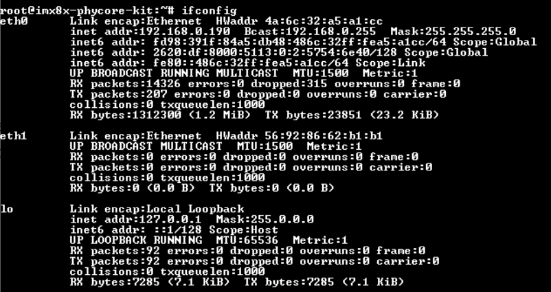
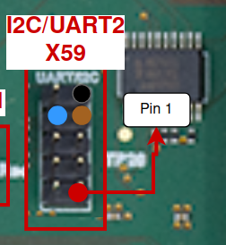
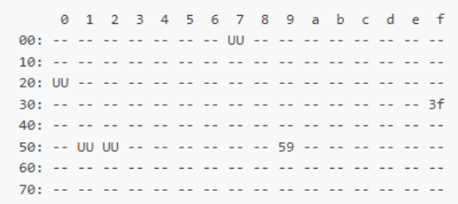
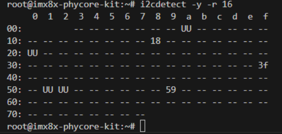

i.MX 8X Developer's Guide
This document lists the interfacing and testing procedures required to get the i.MX 8X development board up and running for SCALES.
Important note: It is ideal to be using a 64-bit Linux host machine as opposed to Windows or a virtual machine. An ARM Cortex Linux machine will not work (cannot use a Jetson as host computer for development). We are using Ubuntu 22.04 native Linux.
Connecting directly to the i.MX 8X
Connect to the dev board following the Quick Start guide.
Required materials
- i.MX 8X development board, with microUSB UART cable and power cable.
- A Windows computer with Tera Term installed (or other serial communication software.)
Directions
Do not power the board until directed. No power makes it easier to verify the serial connection before boot-up.
Using Linux Terminal
1. Install minicom. 2. Check what port the IMX is using by running the following command with and without the UART Debug cable plugged into your computer. In this example, the IMX is using `/dev/ttyUSB0` and `/dev/tty/USB1`. Before IMX is plugged in:  After IMX is plugged in:  3. Connect to the serial ports using minicom. When minicom configuration opens, select `Serial port setup` then select `A` to change the device path to `/dev/ttyUSB0`. The IMX uses one serial port for terminal commands and another for debug. Terminal should be on USB0. Press `Enter` to save changes. Back on the configuration page, select `Exit`. You should be connected to the terminal of the IMX. 4. Once you have connected to the IMX, plug in the power cable. There will be a short boot sequence with an option to stop autoboot. You do not need to stop autoboot. There will evetually be a prompt to enter a password. The default password is `root`.Using Windows Tera Term
1. Do not power the board yet. Connect the UART debug cable to X51 UART0 on the board, and the USB part into your computer. - There are two serial ports that are specific to the i.MX 8X. One will be the debug terminal, and the other will be the main command terminal. Each different Windows host computer will have different names for these ports, so in the next few steps the ports COM15 and COM16 are example ports from Kelly’s computer. - It is a good idea to open both serial ports that appear as options in Tera Term during your first setup, so that you know which ports are which for your specific computer. 2. Start Tera Term (Windows computer). Select Serial COM15. Go to Setup > Serial Port. Change the speed to 115200. Press OK. - COM15 is the command terminal. To see the debug terminal, follow the same steps for COM16. - COM15 and 16 may be different on other computers. To be safe, set up both ports on the first boot to your device. - Make sure to set them up before powering the board, or you will miss the sign in prompt. 3. Plug in the DC power cable to power on the board. 4. Sign in when prompted. Password is “root”.Setting up Host Computer
Following this guide to install the SDK on the host computer.
Once the SDK is set up on the host computer, it never needs to be done again.
Setting up Ethernet
Required materials
- Windows computer with Tera Term installed or Linux environment
- Ethernet cable
- Router/Ethernet hub
- i.MX 8X development board
Directions
-
Connect an ethernet cable from the router to an ethernet hub. Then connect another ethernet cable from your computer to the hub, and a third cable from the board to the hub.
-
Test internet connection on the board. Press Ctrl+C to end the operation after the command runs for a while.
-
Find the IP address of the board in Tera Term
- The IP will be following the words “inet addr” under the ethernet port number you connected to.
- The following image shows the IP is 192.168.0.190 for eth0
- This may change each time you boot the board, so be sure to check.

-
Run VS Code and open a WSL terminal
- Good practice is to run the following:
- Use
sudo apt-get install sshto update ssh if needed.
-
Command to ssh into board: (make sure to update the IP)
- Congrats you are now in the board on your computer.
Copying files over to the board
- Make sure the board is connected to the host computer via ethernet.
- Navigate to the directory with the file you would like to copy to the i.MX 8X. Use the following command to secure copy that file to the board. Fill in the blank for the file name and the IP address of the board.
- You should be able to see the file in the main directory of the i.MX 8X.
I2C Interfacing
Following this guide on I2C interfacing.
Required materials
- MPC9808 Temp. Sensor with 4 female to female dupont wires
- i.MX 8X development board
- Windows computer with Tera Term installed
- 64-bit Linux host computer
Hardware Setup
Wire Legend:
red - Vdd
black - Gnd
brown - SCL
blue - SDA

Red goes into pin 1 of X60.
Directions
-
Follow instructions for setting up ethernet. The following commands can be done either in Tera Term on a Windows machine connected to the board or in terminal ssh’d into the board from the Linux host computer.
-
List the available I2C devices
-
Scan the board for devices
-
Default output: (time to play spot the difference to find your device’s address)

Expected Output

(device address is 0x18)
-
In the host computer’s terminal, source the correct cross-compiler for C code:
- Enter the C compiler directory:
-
Run the code for the sensor:
Notes:sudo ./aarch64-poky-linux-gcc -mcpu=cortex-a35+crc+crypto -fstack-protector-strong -D_FORTIFY_SOURCE=2 -Wformat -Wformat-security -Werror=format-security --sysroot=/opt/fsl-imx-xwayland/5.4-zeus/sysroots/aarch64-poky-linux -O ~/imx8x/i2c-temp-sensor/MCP9808.c -o ~/imx8x/i2c-temp-sensor/mcp9808a- This path only works for C code. If you want to use C++, change the gcc at the beginning to g++. I am still trying to figure out how to do python code so stay tuned for that. - Note: This code is from GitHub. It was listed as free to use, distributed with a free-will license (mentioned in first line of code comments). -
This code will generate an executable file. To run this code on the board, you may choose to use a USB flash drive or pull the code from our GitHub repo:
USB:
- Copy the file to a USB and insert it in the board. Run the following commands on the board to set up the USB:
- Check to make sure the sda1 is accessible by running:
- Run the code for the sensor by running:
- You should see the temperature readings in the terminal.
GitHub:
-
The board must be connected to internet via wifi or ethernet for this method to work.
-
Clone the scales-hardware GitHub repo to your home directory if you not previously done so.
- On the board navigate to the scales-hardware directory (this is a clone of our GitHub repo.) and update the repo
- Then navigate to the imx8x folder and (optionally) view the files there.
- And run the code for the sensor in the same way as before:
- You should see the temperature sensor readings in the terminal.
F Prime on the i.MX 8X
SCALES has developed an F Prime deployment for the i.MX 8X that can be found in our fprime-scales-ref GitHub in ImxDeployment.
How to Clone
There are a few git submodules used here, so when cloning be sure to init and update them.
git clone https://github.com/BroncoSpace-Lab/fprime-scales-ref.git
cd fprime-scales-ref
make setup
make arena-init
source fprime-venv/bin/activate
Necessary Changes
Some lines need to be commented in lib/fprime/cmake/API.cmake in order to use fprime-python. Comment out lines 545 and 562.
After this, you should be good to go!
ImxDeployment
To correctly generate and build for the IMX, you need to have the build environment on your machine. Refer to this guide we made on our docs for how to set up the IMX SDK.
ImxDeployment Build Configuration Details
### For Successful Build Your `settings.ini` should look like this:[fprime]
project_root: .
framework_path: ./lib/fprime
; uncomment this line for JetsonDeployment
; library_locations: ./lib/fprime-python:./lib/fprime-scales
; uncomment this line for ImxDeployment
library_locations: ./lib/fprime-scales
default_cmake_options: FPRIME_ENABLE_FRAMEWORK_UTS=OFF
FPRIME_ENABLE_AUTOCODER_UTS=OFF
# This CMake file is intended to register project-wide objects.
# This allows for reuse between deployments, or other projects.
# add_fprime_subdirectory("${CMAKE_CURRENT_LIST_DIR}/Components")
add_fprime_subdirectory("${CMAKE_CURRENT_LIST_DIR}/ImxDeployment/")
# add_fprime_subdirectory("${CMAKE_CURRENT_LIST_DIR}/JetsonDeployment/")
# add_fprime_subdirectory("${CMAKE_CURRENT_LIST_DIR}/lib/")
# add_fprime_subdirectory("${CMAKE_CURRENT_LIST_DIR}/lib/fprime-scales/scales/scalesSvc")
# Include project-wide components here
# add_fprime_subdirectory("${CMAKE_CURRENT_LIST_DIR}/StandardBlankComponent/")
# add_fprime_subdirectory("${CMAKE_CURRENT_LIST_DIR}/PythonComponent/")
# add_fprime_subdirectory("${CMAKE_CURRENT_LIST_DIR}/MLComponent/")
# add_fprime_subdirectory("${CMAKE_CURRENT_LIST_DIR}/RunLucidCamera/")
After all of this, you should be able to generate and build the ImxDeployment on your host machine.
To generate:
To build: